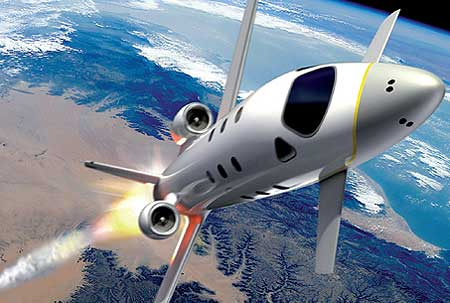
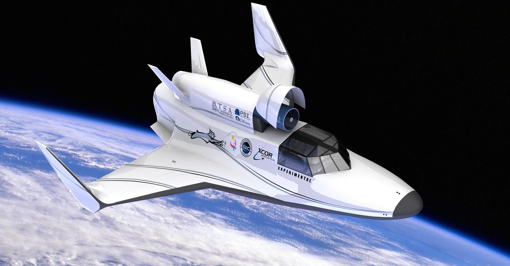
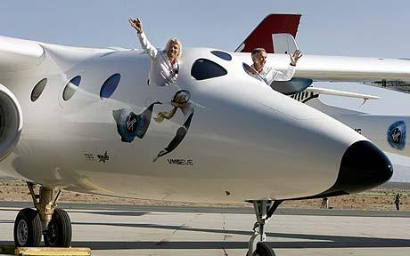
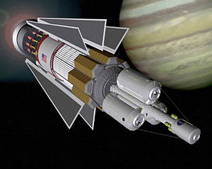
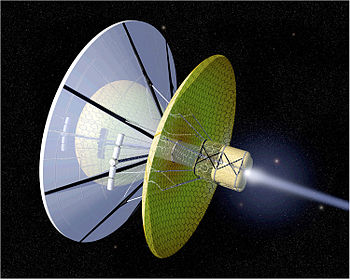
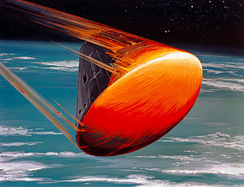

------SPACE TRAVEL------
Space travel can refer to:
- Spacefaring, the capability of and activity in the art of space travel
To be spacefaring is to be capable of and active in the art of space travel or space
transport, the operation of spacecraft or spaceplanes. It involves a knowledge of a
variety of topics and development of specialised skills including (but not limited to):
aeronautics; astronautics; programs to train astronauts; space weather and forecasting;
ship-handling and small craft handling; operation of various equipment; spacecraft design
and construction; atmospheric takeoff and reentry; orbital mechanics (aka astrodynamics);
communications; engines and rockets; execution of evolutions such as towing, micro-gravity
construction, and space docking; cargo handling equipment, dangerous cargoes and cargo storage;
spacewalking; dealing with emergencies; survival at space and first aid; fire fighting; life
support. The degree of knowledge needed within these areas is dependent upon the nature of the
work and the type of vessel employed. "Spacefaring" is analogous to seafaring.
Until now, there has never been a crewed mission outside the Earth–Moon system (so far as the
human inhabitants of planet Earth are concerned or aware of). However, the United States,
Russia, China, European Space Agency countries, and a few corporations and enterprises have
plans in various stages to travel to Mars (see Manned mission to Mars).


Spacefaring entities can be both sovereign states and private corporations. Spacefaring nations
are those capable of independently building and launching craft into space. A growing
number of private entities have become or are becoming space faring.
- Spaceflight, the use of space technology to fly a spacecraft into and
through outer space, which may include:
- Human spaceflight
Human spaceflight (also referred to as manned spaceflight) is space travel with a crew aboard
the spacecraft. When a spacecraft is crewed, it can be operated directly, as opposed to being
remotely operated or autonomous.
The first human spaceflight was launched by the Soviet Union on 12 April 1961 as a part of
the Vostok program, with cosmonaut Yuri Gagarin aboard. Humans have been continually present
in space for 14 years and 205 days on the International Space Station.
Since the retirement of the US Space Shuttle in 2011, only Russia and China have maintained
domestic human spaceflight capability with the Soyuz program and Shenzhou program. Currently,
all crewed flights to the International Space Station use Soyuz vehicles, which remain attached
to the station to allow quick return if needed. The United States is developing commercial crew
transportation to facilitate domestic access to ISS and low Earth orbit, as well as the Orion
vehicle for beyond-low Earth orbit applications.
While spaceflight has typically been a government-directed activity, commercial spaceflight has
gradually been taking on a greater role. The first private human spaceflight took place on 21
June 2004, when SpaceShipOne conducted a suborbital flight, and a number of non-governmental
companies have been working to develop a space tourism industry. NASA has also played a role
to stimulate private spaceflight through programs such as Commercial Orbital Transportation
Services (COTS) and Commercial Crew Development (CCDev). With its 2011 budget proposals released
in 2010, the Obama administration moved towards a model where commercial companies would supply
NASA with transportation services of both crew and cargo to low Earth orbit. The vehicles used for
these services could then serve both NASA and potential commercial customers. Commercial resupply
of ISS began two years after the retirement of the Shuttle, and commercial crew launches could begin by 2017.


- Interplanetary spaceflight
Interplanetary spaceflight or interplanetary travel is travel between planets, usually within a
single planetary system. In practice, spaceflights of this type are confined to travel between the planets of the Solar System.
- Interstellar travel
Interstellar space travel is manned or unmanned travel between stars. Interstellar travel is much more
difficult than interplanetary travel: the distances between the planets in the Solar System are typically
measured in standard astronomical units (AU)—whereas the distances between stars are typically hundreds of
thousands of AU, and usually expressed in light-years. Because of the vastness of those distances,
interstellar travel would require either great speed (a high percentage of the speed of light) or huge
travel time, lasting from decades to millennia.
- Intergalactic travel
Intergalactic travel is space travel between galaxies. Due to the enormous distances between our own
galaxy the Milky Way and even its closest neighbors—hundreds of thousands to millions of light-years—any
such venture would be far more technologically demanding than even interstellar travel. Intergalactic
distances are roughly a hundred-thousand fold (five orders of magnitude) greater than their interstellar
counterparts.
The technology required to travel between galaxies is far beyond humanity's present capabilities,
and currently only the subject of speculation, hypothesis, and science fiction.


However, scientifically speaking, there is nothing to indicate that intergalactic travel is impossible.
There are in fact several conceivable methods of doing it; to date there have been a few people who have
studied intergalactic travel in a serious manner.